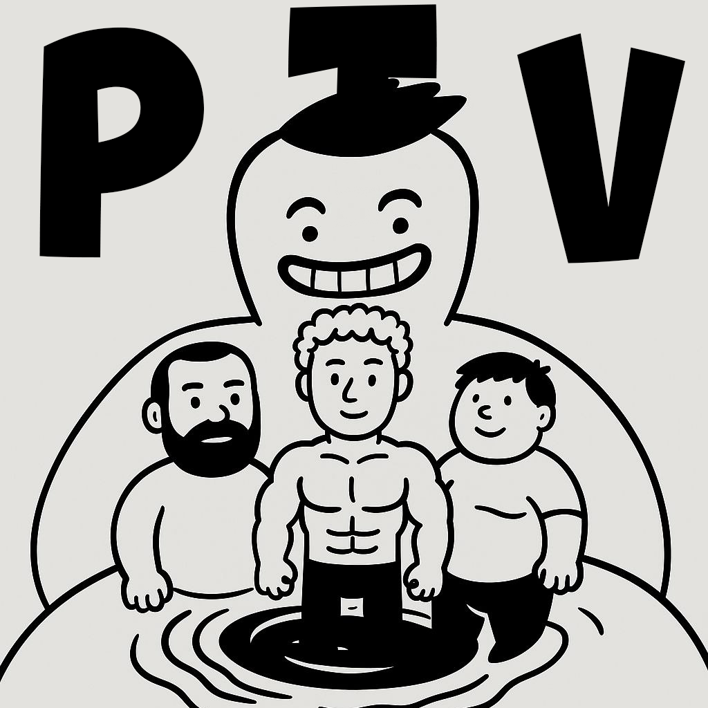

PTV STUDIO — это команда энтузиастов, занимающихся АНТИпрофессиональной озвучкой аниме с 2025 года. Мы стремимся делать смешной, мужской и с шумоподавлением контент для русскоязычной аудитории.
Наша миссия — привносить в каждую озвучку частичку дурости, сохраняя при этом оригинальный замысел создателей. Мы тщательно подбираем актеров из доступных четырех и работаем над идеальным соответствием голоса.
За время работы мы озвучили нихрена, но у нас есть некоторые работы, а именно: «Необъятный океан» (1 серия) и Планы на «ДжоДжо».
И наша навеки утерянная гордость. История про сочные булки и сладкие жопы. Про эпичные сражения и мужскую дружбу. Тут было всё — от покупки подъезда до лабораторных опытов. Больше никто не узнает кто такая(ой) Гоша Катя! Однако мы её не забудем!!!
P.S. Некоторые эпизоды этого кал... ХМ! Этого шедевра все таки сохранились и коненчо они присутствуют на данном сайте